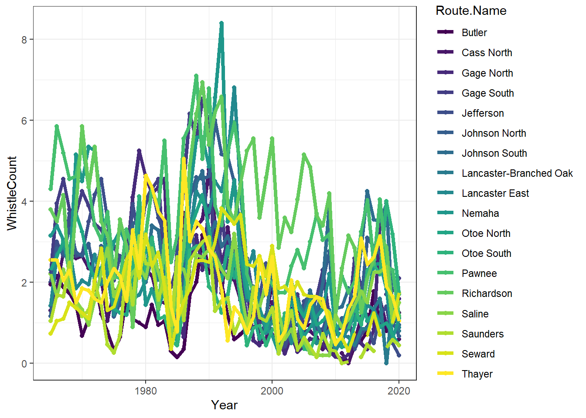

Lab: Hello, Bayes!
Overview
Northern Bobwhite (hereafter ‘quail’) are declining across most of their range. Quail are also a wildly popular species to hunt, study, and worry about–which often means there is excellent data on them! Today, we’re going to use historic quail “whistle count” surveys from eastern Nebraska to describe trends in quail abundance. Whistle counts are often used as a proxy for abundance (i.e., more whistles = more quail). The data you’ll be using ranges from 1965 - 2020!

Bobwhite Quail by Larus
Data description
| Column Name | Description |
|---|---|
| Year | years 1965 - 2020 |
| County | Nebraska county name |
| Route.Name | Route name |
| Route.Number | Route number |
| UTMXN | UTM northing zone 14 |
| UTMYE | UTM easting zone 14 |
| WhistleCount | Mean whistle count per route per year |
| Bob_Region | Quail management region code |
Let’s load the data and tidy it:
#===============================================================================
## Preparations
# # Clear environment?
# rm(list=ls())
# List of packages necessary to run this script:
require(librarian)
shelf(tidyverse, here, sf, brms, maps, terra, tidybayes,
lib = tempdir())
# Set path
repo_url <- "https://raw.githubusercontent.com/LivingLandscapes/Course_EcologicalModeling/master/data/"
# Set seed
set.seed(2252)
# Load data
dat_list <-
list(RouteDictionary = read_csv(paste0(repo_url, "QuailWhistle_Nebraska_RouteDictionary.csv")),
RouteUTMs = read_csv(paste0(repo_url, "QuailWhistle_Nebraska_RouteUTMs.csv")),
RouteWhistleData = read_csv(paste0(repo_url, "QuailWhistle_Nebraska_RouteWhistleData.csv")))
#=============================================================================
## Tidying data
# Tidy whistle data
whistle <-
dat_list$RouteWhistleData %>%
pivot_longer(cols = Cass:Lancaster_YH,
names_to = "Route.Name",
values_to = "WhistleCount") %>%
mutate(Route.Name = case_when(Route.Name == "Cass" ~ "Cass North",
Route.Name == "GageN" ~ "Gage North",
Route.Name == "GageS" ~ "Gage South",
Route.Name == "Jeffersn" ~ "Jefferson",
Route.Name == "JohnsonN" ~ "Johnson North",
Route.Name == "JohnsonS" ~ "Johnson South",
Route.Name == "Lancaster.East" ~ "Lancaster East",
Route.Name == "Lancaster.North" ~ "Lancaster North",
Route.Name == "Lancaster.Branched.Oak" ~ "Lancaster-Branched Oak",
Route.Name == "OtoeN" ~ "Otoe North",
Route.Name == "OtoeS" ~ "Otoe South",
Route.Name == "Richardn" ~ "Richardson",
.default = Route.Name)) %>%
left_join(dat_list$RouteDictionary %>% mutate(Route.Name = `Route Name`)) %>%
mutate(Route.Number = `Route Number`) %>%
filter(Route.Name != "Lancaster_YH") %>%
left_join(dat_list$RouteUTMs %>%
mutate(Route.Number = Route) %>%
group_by(Route.Number) %>%
filter(row_number() == 1)) %>%
mutate(YearNum = Year - 1964,
YearNum2 = (Year - 1964)^2,
Easting_scaled = scale(UTMYE),
Northing_scaled = scale(UTMXN))Data Exploration
On your own, familiarize yourself with the data. Below, we have an example:
ggplot(whistle,
aes(x = Year, y = WhistleCount, group = Route.Name, color = Route.Name)) +
geom_point() +
geom_line(linewidth = 1.5) +
scale_colour_viridis_d() +
theme_bw()
Your Task:
Objective: Quantify spatiotemporal trends in quail whistle counts
- We will work in groups.
- Define your modeling “purpose.”
- Define your analysis methods (e.g., one global model? model selection?)
- Create and run your model(s).
- Interpret the output (plot predictions, create tables, ppc checks, etc.)
- Draft results